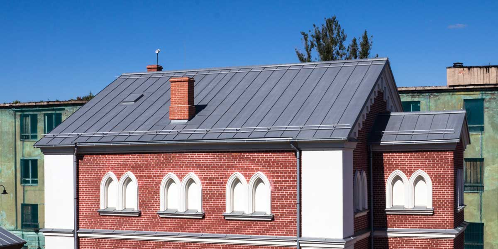
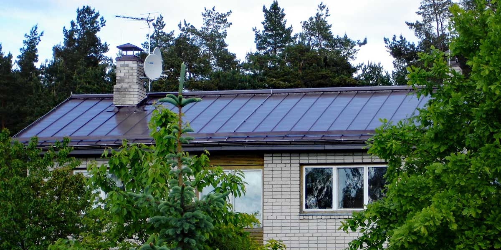
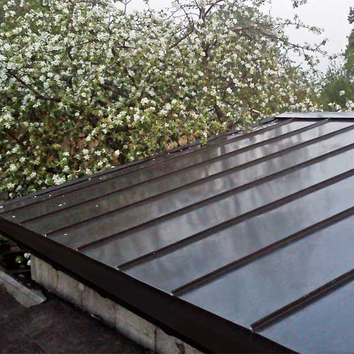
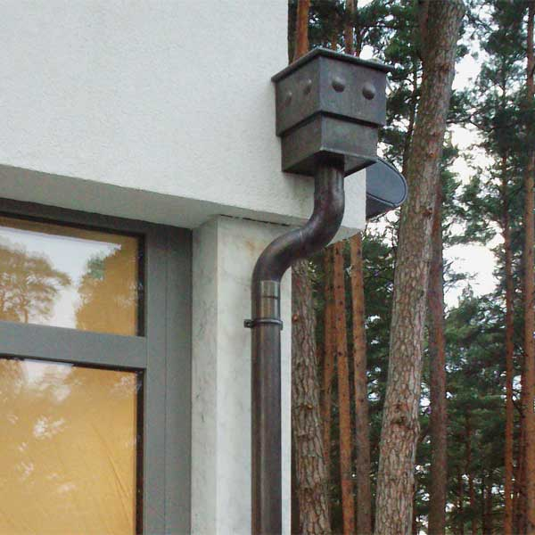

Falcētie jumti
Profesionāla metāla jumta montāža privātmājām, mazstāvu birojiem un noliktavām.

Vairāk nekā 20 gadu pieredze falcēto jumtu un ūdens noteksistēmu montāžā. No privātmājām līdz mazstāvu birojiem un noliktavām.
Atsūtiet projektu vai uzaiciniet mūs uz objektu. Izmērīsim, palīdzēsim izvēlēties piemērotu risinājumu un aprēķināsim izmaksas.
Profesionāla metāla jumta montāža privātmājām, mazstāvu birojiem un noliktavām.
Notekas un skārda elementi, kas papildina jumtu un palīdz aizsargāt ēku no ūdens.
Cinkots skārds, polimēru pārklājumi, varš un titāncinks — izvēle atbilstoši ēkai un projektam.
Daži piemēri no JumiķuDarbi.lv publicētajiem projektiem — lai uzreiz redzētu materiālu un darbu.

Brūns metāla segums

RR32 metāla segums

Skārda darbu detaļas
JumiķuDarbi.lv piedāvā vairākus metālus un pārklājumus falcētajiem jumtiem un ūdens noteksistēmām.
Varat atsūtīt projektu, lai aprēķinātu izmaksas, vai vienoties par objekta apskati un mērījumiem.